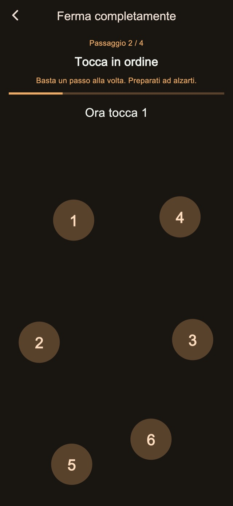
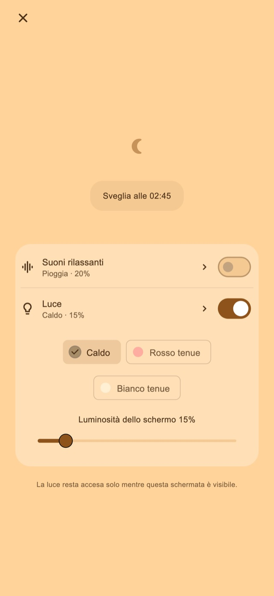

Suoni rilassanti
Ascolta pioggia, onde o rumore bianco. L’audio parte solo quando lo attivi e sfuma fino a fermarsi alla prima sveglia.
Sveglia a vibrazione per i riposini e dopo aver addormentato i bambini
Per chi prolunga il pisolino o si addormenta mentre mette a letto i figli.
01Sequenze di vibrazione
La durata e il ritmo cambiano per distinguersi dalle notifiche quotidiane. Questa sensazione insolita è pensata per aiutarti a notare la sveglia e a svegliarti.
Impulsi brevi, lunghi e ripetuti. Scegli tra quattro modalità base: casuale, stile notifica, soprattutto lunghe o soprattutto brevi. Durata e intervalli cambiano per variare il ritmo. Puoi provarle prima di impostare la sveglia.
Sequenze di vibrazione
02Più avvisi
Ferma solo quello attuale per mantenere i successivi, oppure termina la serie per annullare quelli rimasti.
Salvare il numero e l’intervallo è una funzione Premium.
Più avvisi
Termina quando ti alzi
03Attività per fermare
Calcoli, numeri da toccare in ordine, pressione prolungata e tocchi ripetuti accompagnano arresto e rinvio. I passaggi standard sono inclusi. Per modificarli e combinarli serve Premium.

Schermata notturna
Regola luminosità e aspetto dell’orologio. Puoi nascondere il display dopo un periodo di inattività e toccare per vedere di nuovo ora e comandi.
Scegli una durata, ad esempio 30 minuti, o un’ora per svegliarti.
Tieni aperto lo schermo notturno e attiva suoni o luce se vuoi.
Completa i passaggi di arresto e termina la serie quando ti alzi.
Suoni rilassanti e luce regolabile
Per un riposino o per addormentare il tuo bambino. Attivali dallo schermo notturno quando servono.
Ascolta pioggia, onde o rumore bianco. L’audio parte solo quando lo attivi e sfuma fino a fermarsi alla prima sveglia.
Scegli una luce calda, rosso tenue o bianco tenue e regola la luminosità.
Funzioni base gratuite

Gratis / Premium
Sono inclusi quattro modi di vibrazione, arresto e rinvio standard, schermo notturno, suoni e luce. Alcune schermate mostrano pubblicità.
| Funzione | Gratis | Premium |
|---|---|---|
| Sequenze di vibrazione | ✓ | ✓ |
| Più avvisi | Impostazioni standard | Personalizzabile |
| Attività per fermare | Impostazioni standard | Personalizzabile |
| Schermata notturna / Suoni rilassanti / Luce | ✓ | ✓ |
| Crea e modifica i tuoi ritmi di vibrazione. | — | ✓ |
| Rimuovi tutta la pubblicità. | — | ✓ |
Scegli un piano mensile o un acquisto unico. Il piano mensile si rinnova automaticamente e puoi gestirlo o annullarlo nelle impostazioni del tuo account dello store. Prezzi e condizioni sono indicati prima dell’acquisto.
Domande frequenti
Per usare le vibrazioni personalizzate dell’app, lascia aperto lo schermo notturno dopo aver impostato la sveglia. Se blocchi con il tasto laterale o passi a un’altra app, la vibrazione viene controllata da iOS e non si applicano ritmo e intensità personalizzati. Controlla permessi e impostazioni della vibrazione e fai una prova prima dell’uso.
Ascolta pioggia, onde o rumore bianco. L’audio parte solo quando lo attivi e sfuma fino a fermarsi alla prima sveglia. Scegli una luce calda, rosso tenue o bianco tenue e regola la luminosità.
Sono inclusi quattro modi di vibrazione, arresto e rinvio standard, schermo notturno, suoni e luce. Alcune schermate mostrano pubblicità. Rimuovi tutta la pubblicità. Cambia il numero degli avvisi e gli intervalli. Modifica i passaggi di arresto e rinvio. Crea e modifica i tuoi ritmi di vibrazione. Scegli un piano mensile o un acquisto unico. Il piano mensile si rinnova automaticamente e puoi gestirlo o annullarlo nelle impostazioni del tuo account dello store. Prezzi e condizioni sono indicati prima dell’acquisto.
Scarica
Sveglia a vibrazione per i riposini e dopo aver addormentato i bambini
Funzioni base gratuite
iPhone: iOS 26.1+ / Android: 8.0+